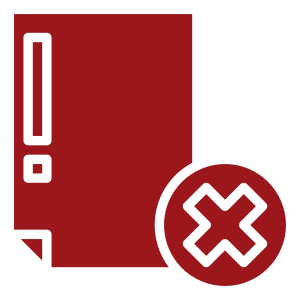

Правила транспортировки при травмах позвоночника
Если требуется перевезти человека с повреждениями спинного мозга или позвонков, нельзя пытаться везти его в больницу своими силами. Для этого должна быть оборудованная машина или карета Скорой помощи, в противном случае есть риск нанести непоправимый вред человеку. Транспортировка больного с переломами позвоночника (а любые травмы до определения точного диагноза рассматриваются именно как переломы) должна осуществляться с учётом следующих требований:
- полная иммобилизация человека за счёт спецоборудования, руки, ноги, голова — всё обездвиживается;
- укладывание на носилки исключительно с участием опытных санитаров;
- сохранение положения тела пациента до самого прибытия на место лечения;
- медицинский персонал должен обеспечить обезболивание, если осуществляется перевозка с места происшествия.
Работники службы «Мед-перевозка.рф» помогут доставить пострадавшего до больницы или из неё домой с максимальным комфортом и с соблюдением всех правил безопасности. Санитарное такси оборудовано всем необходимым, а потому даже при перемещении на дальние расстояния проблем не возникнет.
Что используется при перевозке
- Многоуровневая тележка-каталка для санитарных автомобилей
- Вакуумный матрас
- Инвалидное кресло, для подъёма и спуска больного
- Матрас-носилки
- Подушка, одеяло
- Одноразовая простынь
- Мягкие носилки (применяются при транспортировке больного при узких лестницах)
Какие ошибки недопустимы при транспортировке с травмами позвоночника?
При отсутствии опыта люди часто допускают подобные ошибки, что становится губительным для больного:

Эти ошибки могут ухудшить состояние больного, и важно не допустить их при перевозке. Сотрудники «Мед-перевозка.рф» имеют огромный опыт в оказании подобных услуг, благодаря чему вы можете не переживать о самочувствии человека с травмами костей позвоночника.
Почему стоит выбирать «Мед-перевозка.рф»?
Мы предлагаем транспортировку больных с травмами позвоночника до кровати. Доступные цены и собственный парк санитарных автомобилей позволяют нам оказывать услуги большому количеству жителей Челябинска и области. Все сотрудники «Мед-перевозка.рф» — это квалифицированные специалисты с опытом в оказании услуг транспортировки больных. В случае необходимости пациенту могут быть проведены предписанные медицинские процедуры.
Служба работает круглосуточно, поэтому в какое бы время вам ни понадобилась помощь — мы сделаем всё для комфорта и безопасности пациента. Для заказа санитарного такси достаточно позвонить по указанному номеру телефона или заполнить форму на сайте. После того как вы сообщите все данные оператору, вы узнаете стоимость поездки. Оплата производится по окончании пути, никаких дополнительных платежей к обозначенной оператором окончательной цене вы не вносите.